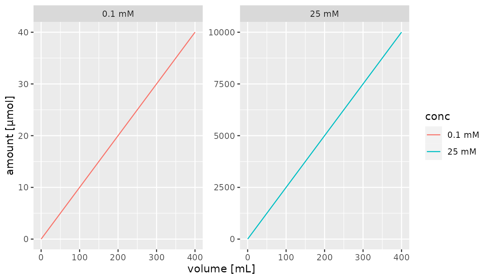
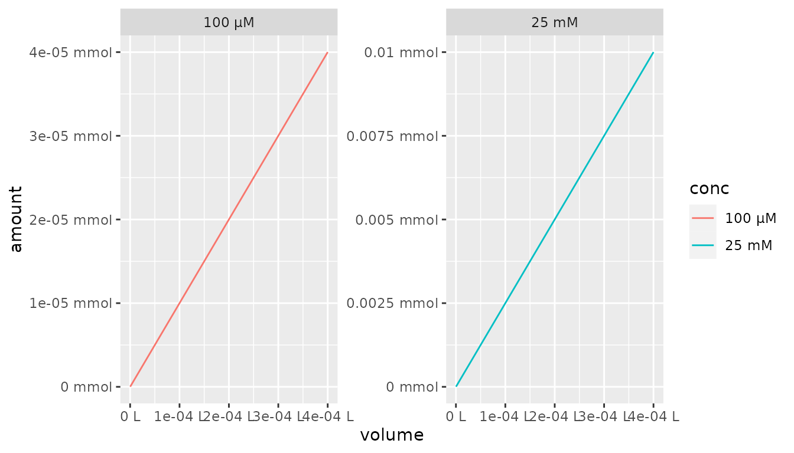

library(microbialkitchen) # load the library
knitr::opts_chunk$set(fig.width = 7, fig.height = 4)
Units & Metric Scaling
All chemical quantities in this package keep track of the units they represent with a base unit as detailed in the quantities vignette and a metric prefix. By default, the metric prefix is adjusted automatically to keep numeric values in a range close to 1. However, scaling to a specific prefix is easily achieved.
# automatic scaling qty(5000, "g") # automatically scaled to kg
## <m (mass) in 'kg'[1]>
## [1] 5qty(5000, "g", scale_to_best_metric = FALSE) # stays g
## <m (mass) in 'g'[1]>
## [1] 5000# specific scaling qty(100, "mg") %>% base_metric() # scale to the base unit (here g)
## <m (mass) in 'g'[1]>
## [1] 0.1qty(100, "mM") %>% base_metric() # scale to the base unit (here M)
## <C (molarity concentration) in 'M'[1]>
## [1] 0.1qty(100, "mg") %>% scale_metric("k")
## <m (mass) in 'kg'[1]>
## [1] 1e-04The actual numeric value of a quantity can be retrieved via the get_qty_value() function which takes an optional parameter to specify which unit the value should be retrieved in (by default it is the unit that the quantity is currently in).
qty(100, "mg") %>% get_qty_value() # returns 100
## [1] 100qty(0.1, "g") %>% get_qty_value() # returns 100 because the units are "mg"
## [1] 100qty(0.1, "g") %>% get_qty_value("g") # better to be specific upon retrieval
## [1] 0.1qty(0.1, "g") %>% get_qty_value("kg") # can use any valid unit
## [1] 1e-04qty(0, "C") %>% get_qty_value("F") # or use it for unit conversion
## [1] 32qty(760, "Torr") %>% get_qty_value("atm") # or use it for unit conversion
## [1] 1To retrieven numeric values as text that includes their units, simply use get_qty_text() instead of get_qty_value().
# get quantity with unit qty(100, "mg") %>% get_qty_text()
## [1] "100 mg"qty(0:10, "C") %>% get_qty_text("F")
## [1] "32 F" "33.8 F" "35.6 F" "37.4 F" "39.2 F" "41 F" "42.8 F" "44.6 F"
## [9] "46.4 F" "48.2 F" "50 F"qty(760, "Torr") %>% get_qty_text("atm")
## [1] "1 atm"To retrieve each quantity in it’s ideal metric scaling, use get_qty_text_each().
# without "each" qty(c(0.1, 1, 1000), "g") %>% get_qty_text()
## [1] "0.1 g" "1 g" "1000 g"# with "each" qty(c(0.1, 1, 1000), "g") %>% get_qty_text_each()
## [1] "100 mg" "1 g" "1 kg"The units of a quantity object can also be retrieved directly with the get_qty_units() function for a single quantity, list of quantities as well as entire data frames (see details on the latter in the data frames section).
qty(5000, "g") %>% get_qty_units()
## [1] "kg"x <- list( a = qty(5000, "g"), b = 42, c = qty(100, "mbar") ) x %>% get_qty_units()
## a b c
## "kg" NA "mbar"Arithmetic
Several common arithmetic operations are implemented for easy interconversion between quantities. All arithmetic operations also automatically keep track of the units and metric prefixes for correct calculations.
Addition and Subtraction
Quantities of the same type (e.g. masses, volumes, etc.) can be added or subtracted with proper interpration of the metric prefixes. The resulting quantity will be scaled to the best metric prefix as described above. Attempts to add or subtract non-matching quantities (e.g. mass + volume) or a quantity and a number without units will fail with an error to avoid unexpect behaviour and ambiguous calculations.
## <m (mass) in 'mg'[1]>
## [1] 1.005## Error : <m (mass) in 'g'> + <V (volume) in 'L'> is not permitted## Error : <m (mass) in 'g'> + <double> is not permittedMultiplication / Division
Quantities can be multipled/divided by a number. The resulting quantity will be scaled to the best metric prefix. This is most commonly used with multiplication/division by 1000.
qty(1, "mg") * 1000 # convert mg into g
## <m (mass) in 'g'[1]>
## [1] 1qty(1, "mg") / 1e6 # convert mg into ng
## <m (mass) in 'ng'[1]>
## [1] 1Quantities can also be divided by another quantity of the same type (e.g. a mass by another mass) effectively canceling out the units resulting in a regular number (with the metric prefixes properly taken into consideration).
## [1] 1e-06Additional multiplications and divisions are possible for specific combinations of quantities as detailed below. These formulas are each implemented for all three possible arrangements.
Concentration (Molarity) = Amount / Volume
## <C (molarity concentration) in 'nM'[1]>
## [1] 100## <V (volume) in 'mL'[1]>
## [1] 50## <N (amount) in 'nmol'[1]>
## [1] 5Concentration (Density) = Mass / Volume
## <C (mass concentration) in 'ng/L'[1]>
## [1] 100## <V (volume) in 'mL'[1]>
## [1] 50## <m (mass) in 'ng'[1]>
## [1] 5Amount = Mass / Molecular Mass
## <N (amount) in 'mmol'[1]>
## [1] 200## <MW (molecular weight) in 'g/mol'[1]>
## [1] 50## <m (mass) in 'g'[1]>
## [1] 10Comparisons
Quantities can be compared with all common logic operators (>, >=, <, <=, ==, !=) taking the metric scaling properly into consideration. Attempts to compare non-matching quantities (e.g. mass & volume) will fail with an error to avoid unexpect behaviour. Comparisons of quantities with numerics are allowed but it is important to be cautious about these since the metric scaling in quantities affects the numeric value.
## [1] TRUE## [1] TRUE## [1] TRUE## [1] TRUE## Error : Can't combine `..1` <m (mass) in 'mg'> and `..2` <V (volume) in 'L'>.It is important to note that due to machine errors, the == is best avoided in favor of more reliable comparisions such as tests that check whether the difference between quantities is smaller than a tiny quantity:
(x <- qty(1, "mg"))
## <m (mass) in 'mg'[1]>
## [1] 1(y <- x / 3)
## <m (mass) in 'µg'[1]>
## [1] 333.3333(x2 <- y * 3)
## <m (mass) in 'mg'[1]>
## [1] 1x == x2 # should be identical but is not because of machine precision
## [1] FALSE## [1] TRUEData Frames
Quantities are fully supported in dplyr type data frames (tibbles) and the type and units of a quantity are displayed underneath the column headers, e.g. V<mL> to indicate a quantity column that is a volume and has the units of mL.
## # A tibble: 5 x 2
## weight volume
## <m[mg]> <V[mL]>
## 1 1 20
## 2 2 20
## 3 3 20
## 4 4 20
## 5 5 20This also means that all arithmetic operations are allowed within data frames.
df <- tibble( weight = qty(1:5, "mg"), vol = qty(20, "mL"), mw = qty(500, "g/mol"), amount = weight / mw, conc = amount / vol ) df
## # A tibble: 5 x 5
## weight vol mw amount conc
## <m[mg]> <V[mL]> <MW[g/mol]> <N[µmol]> <C[µM]>
## 1 1 20 500 2 100.
## 2 2 20 500 4 200.
## 3 3 20 500 6 300
## 4 4 20 500 8 400.
## 5 5 20 500 10 500.To get the columns’ units use get_qty_units()
df %>% get_qty_units()
## weight vol mw amount conc
## "mg" "mL" "g/mol" "µmol" "µM"To make units of specific columns explicit, use make_qty_units_explicit()
# make weight and concentration explicit df %>% make_qty_units_explicit(weight = "g", conc = "mM")
## # A tibble: 5 x 5
## `weight [g]` vol mw amount `conc [mM]`
## <dbl> <V[mL]> <MW[g/mol]> <N[µmol]> <dbl>
## 1 0.001 20 500 2 0.10
## 2 0.002 20 500 4 0.20
## 3 0.003 20 500 6 0.3
## 4 0.004 20 500 8 0.40
## 5 0.005 20 500 10 0.500# change the format for the units df %>% make_qty_units_explicit(weight = "g", conc = "mM", prefix = ".", suffix = "")
## # A tibble: 5 x 5
## weight.g vol mw amount conc.mM
## <dbl> <V[mL]> <MW[g/mol]> <N[µmol]> <dbl>
## 1 0.001 20 500 2 0.10
## 2 0.002 20 500 4 0.20
## 3 0.003 20 500 6 0.3
## 4 0.004 20 500 8 0.40
## 5 0.005 20 500 10 0.500Plotting
Quantities are automatically plotted with proper axis labels if used in ggplot.
##
## Attaching package: 'dplyr'## The following objects are masked from 'package:stats':
##
## filter, lag## The following objects are masked from 'package:base':
##
## intersect, setdiff, setequal, unionlibrary(tidyr) df <- crossing( conc = qty(c(0.1, 25), "mM"), volume = qty(c(0.2, 90, 400), "mL") ) %>% mutate( amount = conc * volume ) df
## # A tibble: 6 x 3
## conc volume amount
## <C[mM]> <V[mL]> <N[µmol]>
## 1 0.1 0.2 0.02
## 2 0.1 90 9
## 3 0.1 400 40
## 4 25 0.2 5
## 5 25 90 2250
## 6 25 400 10000.By default, units are included in the x and y axes titles if a quantity is being plotted. Discrete quantities used for other aesthetics can be converted to a factor using as_factor which automatically includes the units.
library(ggplot2) df %>% mutate(conc = as_factor(conc)) %>% ggplot() + aes(x = volume, y = amount, color = conc) + geom_line() + facet_wrap(~conc, scales = "free")

Alternatively, the unit can be specified using the scale_x_qty() and scale_y_qty() functions and the unit parameter to the as_factor function. Units must be valid for the quantities that are plotted.
df %>% mutate(conc = as_factor(conc, unit = "M")) %>% ggplot() + aes(x = volume, y = amount, color = conc) + geom_line() + facet_wrap(~conc, scales = "free") + scale_x_qty(unit = "L") + scale_y_qty(unit = "mmol")

It is also possible to use the each parameter in scale_x_qty() and scale_y_qty() as well as the as_factor function to use the ideal metric units for each value. For the axes, this switches from including the unit in the axis title to the individual axis values.
df %>% mutate(conc = as_factor(conc, each = TRUE)) %>% ggplot() + aes(x = volume, y = amount, color = conc) + geom_line() + facet_wrap(~conc, scales = "free") + scale_x_qty(each = TRUE) + scale_y_qty(each = TRUE)
It is also possible to combine each and a specific unit for the scale_x_qty() and scale_y_qty() functions. This leads to individual axis value labels in the desired unit.
df %>% mutate(conc = as_factor(conc, each = TRUE)) %>% ggplot() + aes(x = volume, y = amount, color = conc) + geom_line() + facet_wrap(~conc, scales = "free") + scale_x_qty(unit = "L", each = TRUE) + scale_y_qty(unit = "mmol", each = TRUE)

Lastly, the scale_x_qty() and scale_y_qty() support all axis transformations supported by scale_x_continuous() and scale_y_continuous(). For example the log10 transform can be used like this:
df %>% mutate(conc = as_factor(conc, each = TRUE)) %>% ggplot() + aes(x = volume, y = amount, color = conc) + geom_line() + facet_wrap(~conc, scales = "free") + scale_x_qty(trans = "log10", each = TRUE) + scale_y_qty(trans = "log10", each = TRUE)

Concatenation
Quantities can be concatenated using the regular c() function (or the more explicit c_qty()) as long as they are the same type of quantity (e.g. all masses). Concatenation make sure that the metric prefix is taken into consideration and scales the new vector to the best metric of the median.
## <m (mass) in 'mg'[5]>
## [1] 1000 1 2 3 2000Missing data
Missing data (NA), empty vector (numeric(0)) and infinity placeholders (Inf, -Inf) are supported in all quantities and work the same as in any other R vectors.
qty(NA, "mg")
## <m (mass) in 'mg'[1]>
## [1] NAqty(Inf, "mg")
## <m (mass) in 'mg'[1]>
## [1] Inf## <m (mass) in 'mg'[0]>## <m (mass) in 'mg'[4]>
## [1] 10 NA -Inf Inf